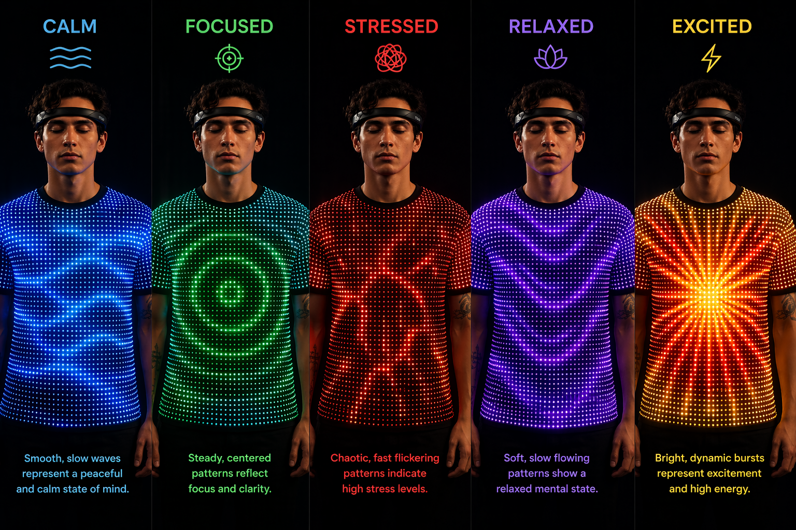

Sentio reads EEG signals from a Muse headband, maps emotional states
through AI, and drives a WS2812B LED grid embedded in a garment —
turning neuroscience into living, wearable art.
Five stages transform raw EEG oscillations into colour, motion, and light on a physical garment.
01
🧠
EEG Capture
Muse 2 headband streams 4-channel EEG at 256 Hz via Bluetooth to BlueMuse, then LSL.
Muse 2 · LSL
02
⚡
Signal Processing
FastAPI backend extracts α, β, θ, γ, δ band power via BrainFlow, normalises and checks signal quality.
BrainFlow · FastAPI
03
🤖
Emotion Mapping
Rule-based emotion engine classifies each window into calm, focused, stressed, relaxed, or excited.
Rule-based AI
04
🎨
Pattern Generation
Backend maps emotion + band powers to a colour palette, pattern seed, and complexity value broadcast over WebSocket.
FastAPI · WebSocket
05
💡
LED Display
ESP32 receives the stream and renders fluid, geometric, or pulse patterns on a WS2812B 8×8 LED grid sewn into the garment.
Arduino · FastLED
Capabilities
Everything in one unified system
From hardware acquisition to projection mapping, Sentio handles the complete pipeline.
📡
Real-time EEG streaming
BrainFlow acquires data from the Muse 2 at 256 Hz. A built-in EEG simulator lets you develop without hardware.
BrainFlowLSLBlueMuse
🧮
Multi-band feature extraction
Alpha, beta, theta, gamma, and delta power computed per window. Signal quality scoring prevents noisy classifications.
PythonNumPyFastAPI
💡
React monitoring dashboard
Live WebSocket dashboard with band-power charts, emotion orb, design params, and a Manual Override mode for demos.
React 18ViteFramer Motion
🎮
Manual override mode
Slide band values and pick emotion presets via the frontend. Values are injected into the WebSocket stream and the Arduino updates its LED pattern instantly — no headset needed for demos.
REST APIWebSocket
💡
300-LED wearable patterns
BTF-LIGHTING WS2812B strip (5 m · 60/m) sewn in serpentine rows inside a black t-shirt. Four animations: Fluid Waves, Geometric Rings, Rhythmic Pulse, Star Field. Brightness scales with live signal quality.
FastLEDESP32WS2812B 300px
🔌
Disconnect detection
Both the frontend and TD mockup detect signal dropout in real time and surface an actionable reconnect modal with a recovery countdown.
WebSocketSignal Quality
Emotional States
Five emotions, five visual worlds
Each classified brain state drives a distinct LED colour palette and animation pattern on the garment.

CALM · FOCUSED · STRESSED · RELAXED · EXCITED
— real-time LED patterns driven by EEG band power
〰️
CALM
↑α ↓β ↓γ
Fluid Waves · Blue
◎
FOCUSED
↑β ↓θ ↓α
Geometric Rings · Green
✦
STRESSED
↑β ↑γ ↓α
Rhythmic Pulse · Red
❋
RELAXED
↑α ↑θ ↓β
Fluid Waves · Purple
⚡
EXCITED
↑γ ↑β ↑α
Burst / Star · Orange
Physical Setup
Sewn into a wearable garment
A BTF-LIGHTING WS2812B strip (5 m · 60 LEDs/m = 300 LEDs) is sewn in
serpentine rows inside a black t-shirt. The LEDs face outward toward the
fabric, diffusing through the weave so each emotion paints the entire
garment in a distinct colour field. The ESP32 sits in a small waist pouch
and connects wirelessly to the Sentio backend via WebSocket.
BTF-LIGHTING WS2812B 5 m · 60 LEDs/m— 300 individually addressable RGB LEDs, sewn in 12 serpentine rows
Black t-shirt lining— LEDs face outward; dark fabric diffuses each pixel into a soft glow
ESP32 in a waist pouch— WiFi + WebSocket client; one data wire to strip DIN
USB power bank ≥ 10 000 mAh— 5 V / 3 A output; 2–3 h runtime at brightness 60 (~3.2 A draw)
330 Ω data resistor + 470 µF cap— prevents ringing on DIN; stabilises the 5 V rail
Shared WiFi / phone hotspot— ESP32 and backend laptop on the same network
BTF-LIGHTING WS2812B · 5 m · 60 LEDs/m300 LEDS
Live strip simulation — 25 × 12 · 300 LEDs
Technology
Built on a modern open stack
Every layer chosen for real-time performance and ease of integration.
🐍
FastAPI
EEG processing · REST · WebSocket
⚛️
React 18 + Vite
Monitoring dashboard · TypeScript
🔌
Arduino ESP32
WiFi + WebSocket · WS2812B driver
🧠
BrainFlow
Muse 2 EEG acquisition · band power
💡
FastLED
WS2812B animations · colour palettes
🔗
LSL · BlueMuse
Bluetooth EEG stream to backend
💅
Tailwind + shadcn/ui
Dashboard styling · component library
🐙
GitHub Pages
This landing page · open source
The Team
The people behind Sentio
Built during the second semester of the Master in Creative Computing & Artificial Intelligence at IADE — Universidade Europeia.
🎓
Master in Creative Computing & Artificial Intelligence
Full-stack engineering, EEG signal processing, ESP32 firmware & LED wearable integration.
MZ
M. Zidane Sidat
Design, Research & Documentation
Creative concept development, Project documentation — translating the intersection of neuroscience, fashion and AI into a coherent visual and academic narrative.
Academic Context
Semester 2 units applied to Sentio
Every unit from the second semester of the Master in Creative Computing & AI at IADE shaped a distinct layer of this project — from the neural network that reads brainwaves to the garment that wears the result.
🧠
Applied Deep Learning
Semester 2 · Unit 1
Covers neural network architectures, training pipelines, and real-time inference — moving deep learning from theory into production systems that operate under tight latency constraints.
Applied in Sentio
BrainFlow's built-in ML models compute mindfulness and restfulness scores per EEG window using a trained neural classifier.
The emotion detection pipeline runs inference on every 256 Hz frame, classifying brain states in under 50 ms end-to-end.
Signal quality scoring uses learned band-power distributions to distinguish clean EEG from electrode noise.
🎨
Interface & Interaction Design
Semester 2 · Unit 2
Explores how humans interact with digital systems — covering feedback loops, real-time data visualisation, accessibility, and the design of interfaces that respond meaningfully to user state.
Applied in Sentio
The React monitoring dashboard surfaces live EEG bands, emotion confidence, and signal quality through animated, colour-coded components.
Manual Override mode lets users inject emotion presets via sliders — giving full interactive control without a headset.
The disconnect modal and uncertainty states follow inclusive design principles — never leaving the user without clear system feedback.
✨
Generative Artificial Intelligence
Semester 2 · Unit 3
Studies systems that synthesise novel outputs — including generative models, procedural generation, and AI-driven creative tools that produce images, patterns, or text.
Applied in Sentio
The pattern mapper generates unique LED animations per frame — colour palette, complexity, and seed all driven by live EEG values, never repeating the same output.
Four generative modes — Fluid Waves, Geometric Rings, Rhythmic Pulse, Star Field — each procedurally shaped by band power in real time.
On every streamed frame the system produces an AI guidance sentence — a short natural-language message that reflects the detected emotion and tells the wearer what the garment is doing and why (e.g. "You're calm. Maintain this state to deepen the slow flowing visuals."). This closes the generative loop: the AI does not only drive the light output, it narrates its own decisions back to the human in real time.
⚡
Emerging Technologies
Semester 2 · Unit 4
Examines technologies at the frontier of computing — wearables, brain-computer interfaces, IoT, edge AI, and the cultural implications of embedding intelligence into physical objects.
Applied in Sentio
The Muse 2 EEG headband and BrainFlow SDK represent consumer-grade BCI hardware brought into a creative wearable context.
A WS2812B LED strip sewn into a garment demonstrates edge IoT — an ESP32 acting as a low-latency WebSocket client driving 300 physical pixels.
The full stack — BCI → FastAPI → WebSocket → Arduino → fabric — embodies the physical-digital convergence that defines emerging technology practice.
FAQ
Frequently asked questions
Everything you need to know about how Sentio works, what hardware is required, and how to run it yourself.
No. The backend ships with a built-in EEG simulator that generates realistic band-power data, so you can develop and demo the full pipeline — dashboard, patterns, and LED output — without a Muse headband. Simply set device_source: simulator in your session config.
Sentio is built around the Muse 2 (4-channel EEG, 256 Hz) streamed via BlueMuse + Lab Streaming Layer (LSL). Because the backend uses BrainFlow, other BrainFlow-compatible boards can be connected by changing the board_id in the session config — though emotion presets are tuned for Muse band ranges.
Each EEG window is processed into five band powers (α, β, θ, γ, δ). A rule-based classifier maps band ratios to one of five emotions — calm, focused, stressed, relaxed, or excited. When BrainFlow's deep learning models are available, mindfulness and restfulness scores refine the classification. A weighted smoothing window stabilises the output across the last 7 frames to prevent jitter.
Under typical conditions the pipeline runs in under 50 ms — from EEG sample acquisition through signal processing, emotion classification, WebSocket broadcast, and LED render on the ESP32. The main variable is WiFi RTT between the backend laptop and the ESP32.
The garment uses a BTF-LIGHTING WS2812B strip — 5 m at 60 LEDs/m = 300 individually addressable RGB LEDs, sewn in 12 serpentine rows. Power comes from a USB power bank (≥ 10 000 mAh, 5 V / 3 A) worn in a small waist pouch alongside the ESP32. Runtime is approximately 2–3 hours at brightness level 60.
Yes — Manual Override is designed exactly for this. From the frontend dashboard you can select any emotion preset or drag individual band sliders. The values are injected directly into the WebSocket stream, so the Arduino updates its LED pattern instantly. This is the recommended mode for gallery demos and exhibitions where headset comfort is impractical.
Yes. The full repository — backend (FastAPI + Python), frontend (React + TypeScript), and Arduino firmware (ESP32 + FastLED) — is publicly available on GitHub under an open licence. See dumildematos/master-project-2.
Open source & fully documented
All source code, Arduino setup guide, and backend instructions are available on GitHub.